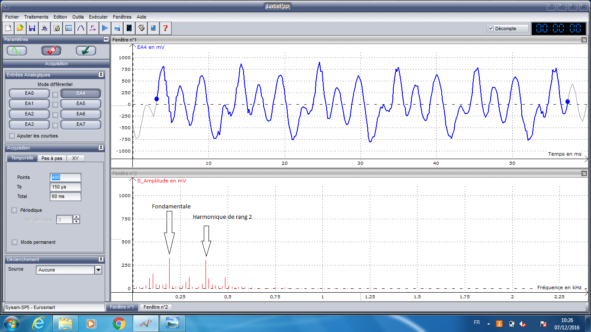

II: Le son
De quoi est il composé ?
Premièrement le son se traduit par une onde acoustique, l’onde acoustique étant une
onde mécanique.
Le son est une suite de surpressions par rapport à la pression atmosphérique, considérée comme étant une pression moyenne.
Il existe deux types de sons, le son naturel et le son artificiel. Le son artificiel est provoqué par un électro-aimant qui fait vibrer très rapidement une membrane suivant le courant électrique envoyé, c'est le principe du haut-parleur.
En inversant ce principe on obtient un micro.
Une onde sonore a une caractéristique importante qui est la fréquence, exprimée en hertz(Hz). L'homme perçoit les ondes sonores entre 20 Hz et 20 kHz
En dessous de 20 Hz, les fréquences sont dans la catégorie des infrasons, et au-dessus de 20 kHz,les fréquences sont rangés dans les ultrasons.
Le son a une intensité qui est exprimée en décibels, qui correspond à l’amplitude de l’onde qui lui est associée.
Le timbre est une autre caractéristique du son qui représente la forme de l’onde, une onde sonore n'est généralement pas en forme de sinusoïde parfaite.
On différecie les sons qui nous parviennent, notamment les instruments de musique, à l'aide du timbre.
On mesure l'intensité d'un son en
décibels . Le son peut posséder des harmoniques, ce sont des fréquences qui ont comme valeur la fréquence du son (appelée fondamentale) multiplié par un entier. En fonction de la valeur de l'entier, on définit le rang de l'harmonique.

Ici, on voit la courbe de l'onde sonore qui a été obtenue en jouant un sol sur une basse (électrique). On remarquera son amplitude ainsi que son motif. En dessous on voit une analyse de fourrier pour déterminer la fondamentale et les différentes harmoniques.
Comment se propage t'il ?
Le son se propage dans n’importe quel milieu que ce soit l’air, l’eau ou des matériaux comme le bois ou le métal. Les ondes sonores ne se propagent que sur un support, et ne peuvent donc pas se déplacer dans le vide. La vitesse du son est plus ou moins élevée en fonction de la nature, de la température, de la pression et surtout de la densité du milieu dans laquelle elle se propage.
Quand les conditions de température et de pression sont normales la vitesse du son est de 340 m.s-1.
Quelques exemples de vitesses: eau = 1460 m.s-1 ; acier = 5100 m.s-1 ; béton = 4000 m.s-1 ;verre = 5000 m.s-1.
Quelle est la différence entre un bruit et un son ?
Tout d’abord, le son est une vibration acoustique qui se propage dans l’air qui provoque des sensations auditives.
Quant à lui le bruit est un ensemble de sons produits avec des vibrations irrégulières avec des haromniques sont les coefficients ne sont pas des entiers, le bruit est souvent perçu comme une nuisance.
Le son peut devenir un bruit lorsque les ondes acoustiques deviennent trop gênantes et désagréables voire agressive. Le bruit peut être défini par son intensité qui peut être variable ou non, faible ou forte.
Mais aussi par ses composantes fréquentielles, qui peut être pur, d’une seule fréquence ou complexe, une superposition de plusieurs ondes sonores avec chacune une fréquence, une amplitude et un timbre différent.
Par ses variations temporelles, discontinue ou non, court, long. Et par son milieu: ouvert , fermé ou réverbérant.